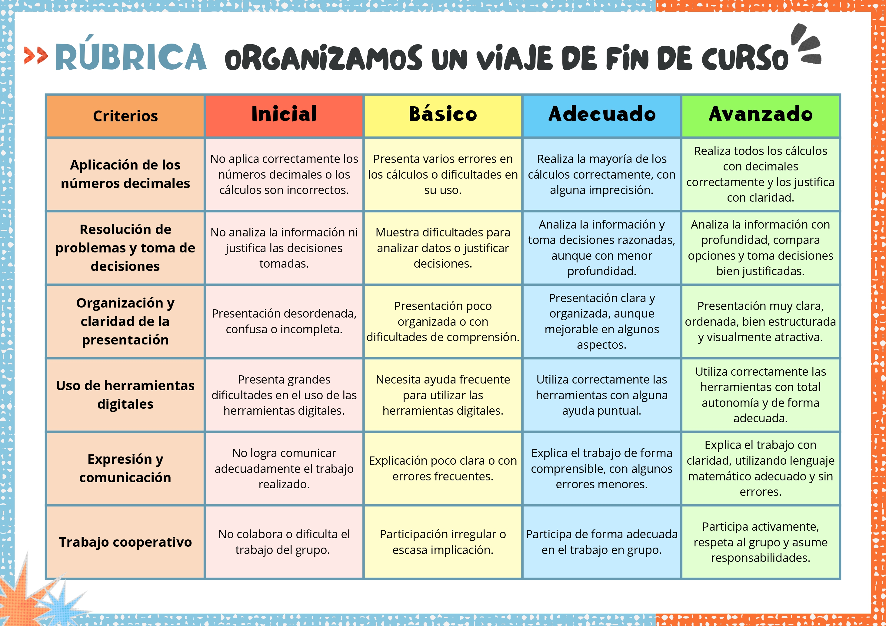
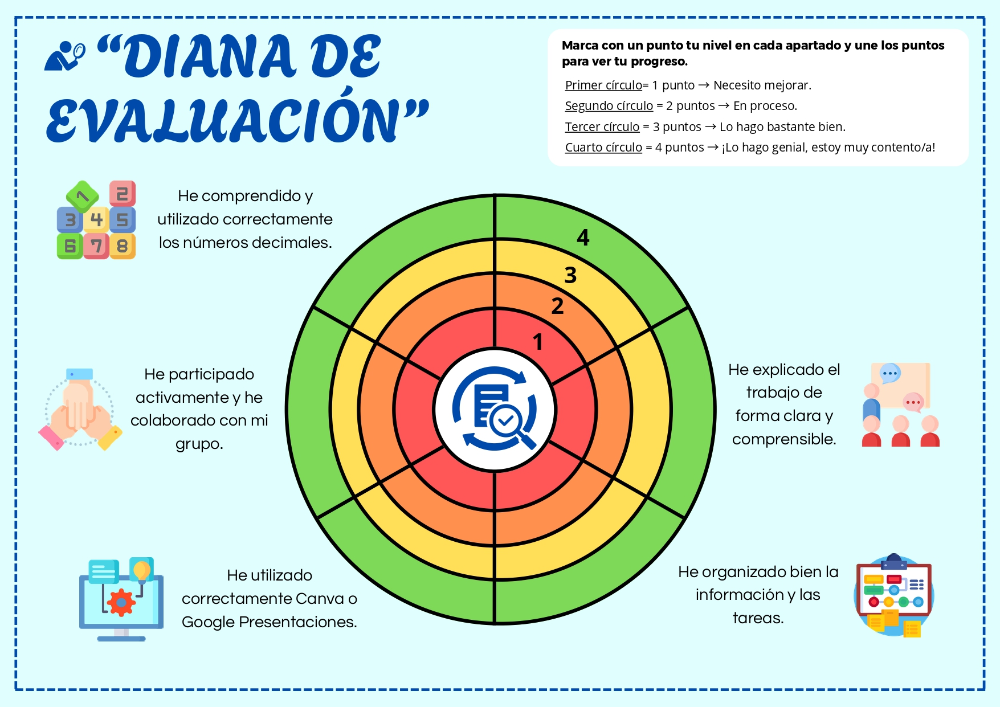

Técnicas e instrumentos de evaluación
Para la evaluación de esta Situación de Aprendizaje se emplearán diferentes técnicas e instrumentos que permitan recoger información variada sobre el proceso de aprendizaje del alumnado, no solo con finalidad calificadora, sino también formativa.
Rúbrica de evaluación del producto final
Se utilizará una rúbrica para evaluar la presentación digital del viaje elaborada por el alumnado (Canva o Google Presentaciones). Este instrumento permitirá valorar de forma objetiva el producto final teniendo en cuenta diferentes criterios.
Se utilizará durante las sesiones 5 y 6 (elaboración del producto), así como en la sesión 7 (exposición final).
Con ella, se evalúa:
- Aplicación de los números decimales.
- Resolución de problemas y toma de decisiones.
- Organización y claridad de la presentación.
- Uso adecuado de herramientas digitales.
- Expresión y comunicación.
- Trabajo cooperativo.
Los resultados permitirán identificar el nivel de adquisición de los aprendizajes matemáticos y digitales. Además, servirán para ofrecer feedback individualizado al alumnado y detectar dificultades comunes para reforzarlas en futuras actividades.

Diana de autoevaluación y coevaluación
Se utilizará una diana de evaluación para que el alumnado valore su propio trabajo y el de su grupo, fomentando la reflexión y la autorregulación del aprendizaje.
Se utilizará al final de la sesión 6 (antes de la entrega final) y tras la exposición realizada en la sesión 7.
Con ella, se evalúa:
- Participación en el grupo.
- Comprensión de los números decimales.
- Uso de herramientas digitales.
- Organización del trabajo.
- Implicación en el proyecto.
La información recogida permitirá conocer la percepción del alumnado sobre su aprendizaje, detectar posibles desajustes entre la autoevaluación y la evaluación del docente, y fomentar la mejora continua. También ayudará a identificar problemas en el trabajo cooperativo.
